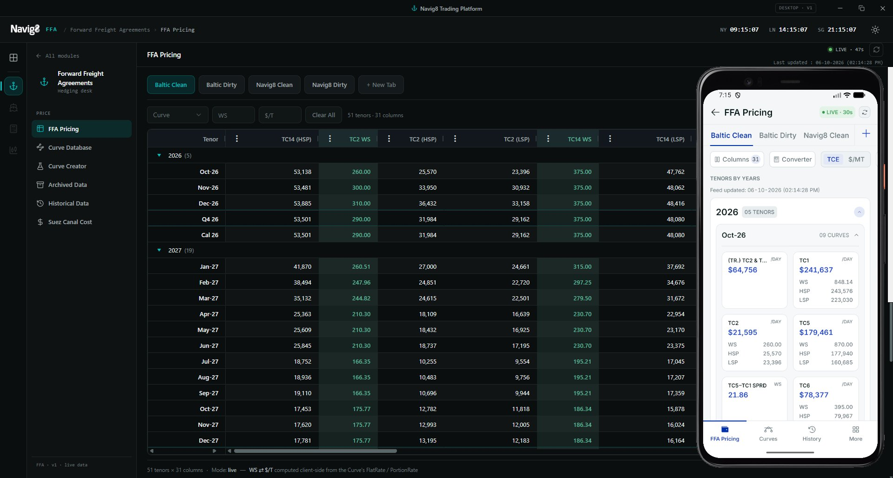

Case study
Navig8 Trading Platform: Cross-Platform QA Test Automation
PythonBehave / BDDPlaywrightAppium / UiAutomator2Selenium WebDriverElectron / CDPAndroid EmulatorPillowGitHub ActionsKubernetes (Testkube)GrafanaGit

Overview
Navig8 is a trading platform for maritime Forward Freight Agreements (FFAs). It prices TCE and Worldscale rates, forward curves, bunker costs and archived settlement data from live market feeds, for traders on a hedging desk. It ships as a web app, a desktop app (Electron) and a mobile app (React Native / Expo).
I built and maintained automated end-to-end test suites for all three clients. The suites check that pricing data, curve management and trader workflows behave correctly against the live development environment.
What I did
- Designed BDD test suites in Gherkin, using the Page Object Model, with readable, literal step definitions that non-developers can review.
- Rebuilt the entire mobile suite after a full UI redesign of the app. I mapped every new screen on a real emulator, wrote a locator map, then rebuilt about 190 scenarios covering:
- pricing grid, card and table views;
- TCE / $-per-tonne price modes;
- a currency converter;
- column management;
- archived data;
- forward-curve charts;
- curve creation and the curve database;
- historical data queries.
- Kept Web, Desktop and Mobile consistent: the same scenarios and step wording across the three clients, so one test case covers the same behaviour everywhere.
- Validated data, not just UI: for example,
- checking that $/tonne values equal Worldscale × flat rate;
- checking that converter results match the curve's own parameters;
- checking that historical results fall inside the chosen date range and filters.
- Tested safely on shared live data: tests that create curves or change shared layouts always clean up after themselves. A recovery mechanism restores shared state on the next run if a run crashes mid-way.
- Found and documented real defects: these included missing input validation, a button enabled before its required fields were filled, stale results after changing filters, and truncated dates. Each one has an automated check that will pass once it's fixed.
- Organised runs by priority: smoke (P1), functional (P2) and destructive/edge (P3) runners, with PDF and JSON reports. These feed a CI pipeline (GitHub Actions + Testkube on Kubernetes) and a Grafana QA dashboard.
Technical challenges solved
- A UI built for touch, not automation: some elements had no labels. I solved it by locating elements through their geometry, programmatic scrolling, and accessibility IDs.
- Visual bugs invisible to automation: a truncated date still showed its full value in the accessibility tree, so I detected the truncation by analysing the screenshot pixels.
- Live data that changes every 60 seconds: the tests wait for a fresh refresh cycle before comparing values, so they stay reliable without hard-coded prices.
- Business-day logic for archived data: the tests always select the previous trading day, so weekend gaps don't break them.